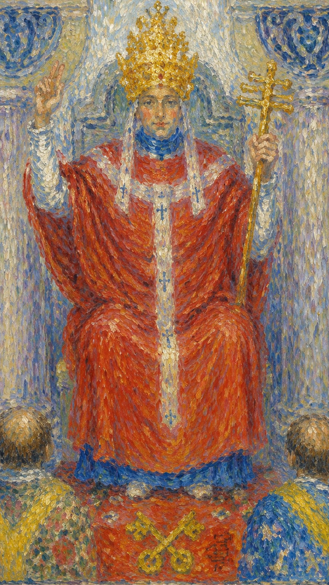
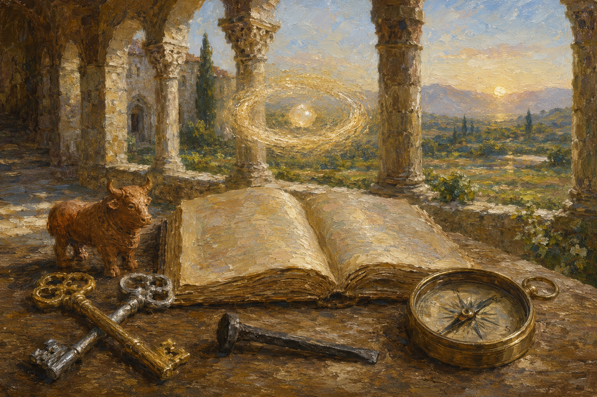
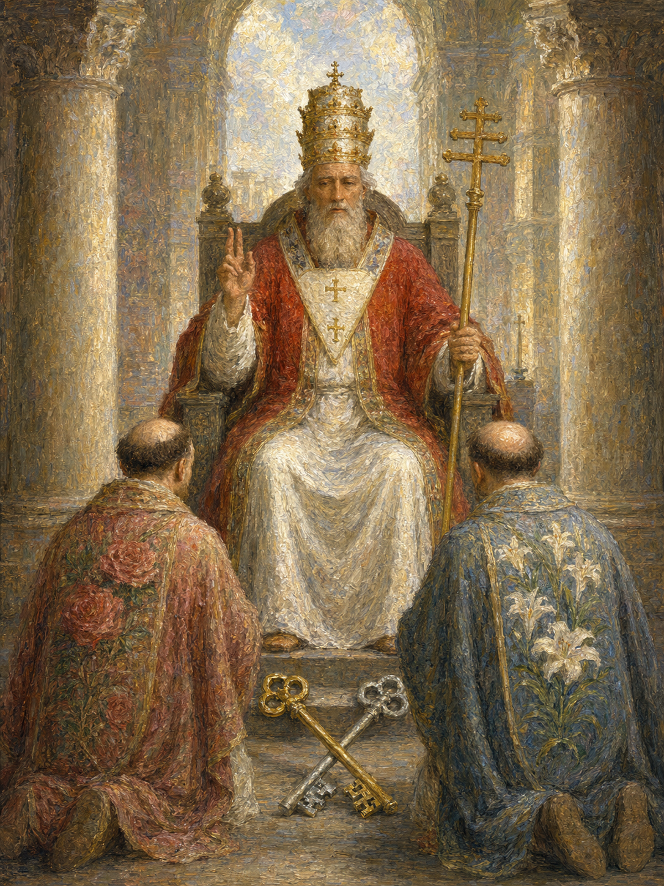
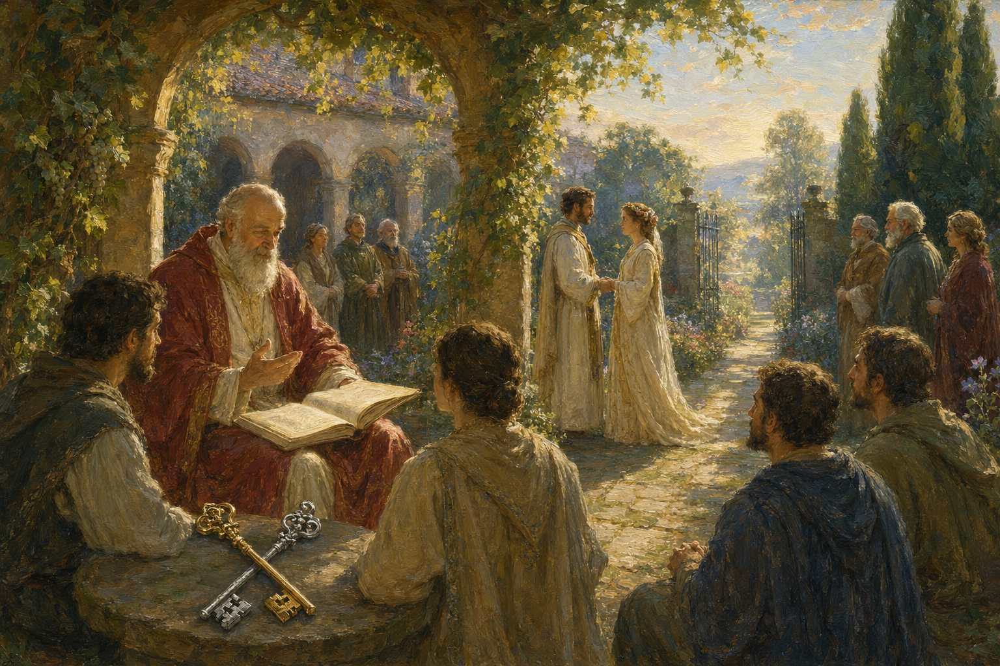
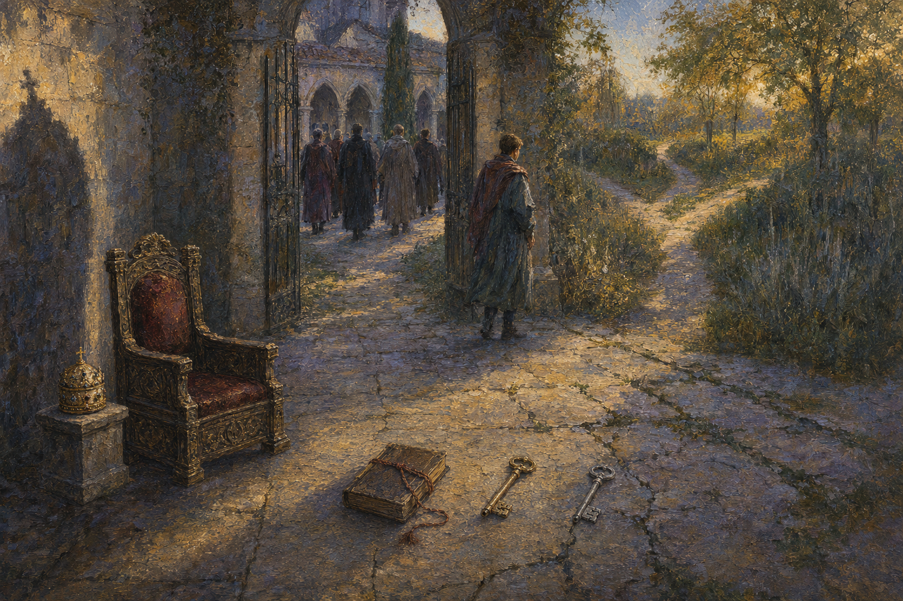
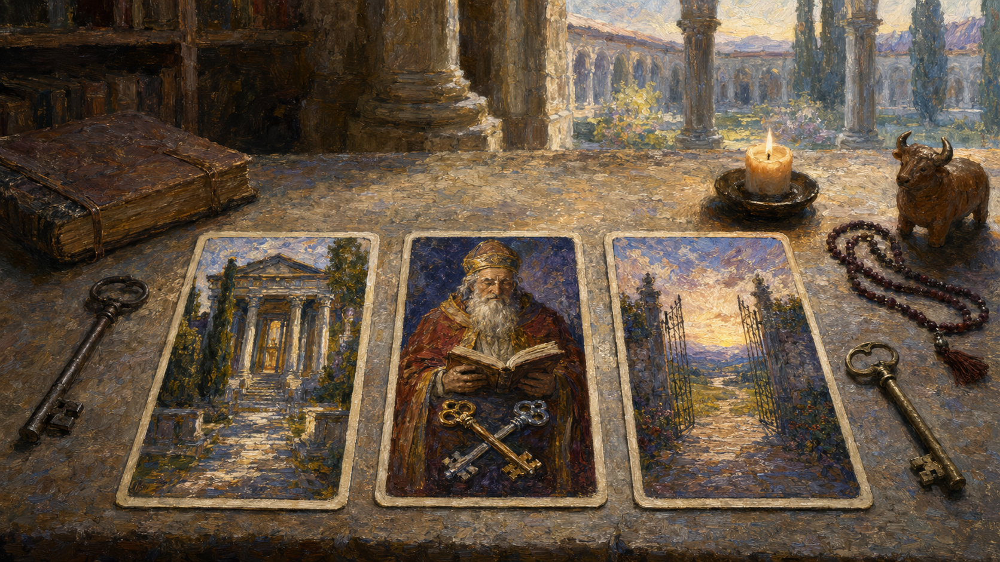

教皇，也被称为教宗，是塔罗牌中代表宗教与精神层面的一张牌。牌中钥匙象征智慧开启，三头守护犬与公牛图像源于古埃及塞拉皮斯崇拜；其神话原型可追溯至希腊人马喀戎的自我牺牲形象，亦呼应孟菲斯圣牛阿皮斯（Apis）的繁衍象征。他承载被社会认可的知识、仪式与价值系统，把个人经验接入更大的传统。
教皇和女祭司同样关乎宗教精神与内心世界：女祭司重视内在体悟，教皇则将智慧视为真理并广泛传播。这张牌常指向学习、认证、师承、组织规则，或关系中共同价值观的分量。
“Pope”原意为“父亲”。教皇与皇帝共同分担对世人的责任：一个提供物质需求，一个导引心灵成长。但当你把成长责任完全交给他人，心胸反而可能变得狭窄；亲身体验，才是从盲信走向理解的证据。
牌面中的教皇身穿红袍，端坐在信众面前，头戴象征权力的三层皇冠，分别代表物质、精神与道德三个层次的世界认知。他的右手食指与中指指向天空，象征祝福；左手握着主字形的权杖，象征神圣与权力。耳边垂下的白色挂饰，代表他聆听信众心声的使命。
在教皇脚下，有一对交叉放置的钥匙，一把金色、一把银色，代表阴与阳，据说是能够开启智慧与神秘之门的日月之匙。坐在他面前的两位信众，左边身着红色玫瑰袍，代表热情与爱心；右边披着白色百合外衣，代表内心的纯洁与灵性的成长。整幅画面表现出神圣知识被传授、被保存、被制度化的过程——教皇像一座桥梁，把个人经验稳稳连接到更大的传统之中。
教育的最高境界是润物细无声。这张牌描述的是带有男性外在特质的人事物，并不一定单指人。正位表示具有智慧胸怀的成熟男性品质——稳重、宽广、值得信赖；逆位则表示心胸狭隘、小黠大痴的男性品质。落到具体事物上，它也可以代表一个人行事与处世的风格。
他的右手食指与中指指向天空，象征祝福；左手握着主字形的权杖，象征神圣与权力。
钉子或连接器——将知识、群体与传统联结起来。
Yeli 轮（Causal）· 第四眼脉轮，代表灵性连结。
东南方 · 在稳定秩序中寻找新的精神入口。


传统体系中的门槛与秩序，象征步入一个新的精神领域或知识境界。
物质、精神与道德三层世界的认知，象征精神、伦理与社会权威，也是领导者身份与统治能力的标志。
主字形权杖象征宗教权威与精神领袖的地位，是权力与统治的象征。
右手两指指天，与宗教仪式或祝福相关，代表教导、认可、分享知识与智慧。
一金一银的日月之匙，代表阴阳，可解答宗教或精神难题，开启知识与信仰之门，也代表制度许可。
与智慧和经验相联系，象征成熟而稳重的思考。
代表热情、力量与权力，红色也与物质世界相关联。
象征纯洁、精神上的清洁与真理。
三角形与三位一体及精神的三重面相相联系。
代表稳定的权力与统治地位，也是威严与尊严的象征。
追随者或学徒的出现，象征导师与指导、学习与归属的师生关系。
象征爱与纯洁，以及灵性的追求。
明暗对比代表知识与无知、启发与未知的并存。
象征灵修，以及放弃物质主义的追求。
十字象征基督教，代表宗教的教义与信仰。
仪式、规范与集体信念。
数字 5 是稳定结构中的挑战，也是人进入社会规则后的学习。它既带来冲突，也带来通过规范成长的机会。
金钱：博学不精，投资倾向冒险；应先稳固事业，再追求更高层次的自由。
感情：重视自由、不喜束缚、喜欢挑战；若婚姻不幸福，可能为维持家庭而隐瞒真实问题。
人物：见多识广、好学、能言善道、长袖善舞，适合贸易、自由职业与涉外工作，也喜欢旅行、美食与感官经验。
能量倾向：在制度之上追求自由，容易打破数字 4 建立的结构，让能量自由流动。
教皇的 5 号能量说明：个人终会走入更大的知识系统，学习群体如何保存经验、传递信念，并在规范之中获得成长。
数字 5 的课题：如何集中能量，将好奇、博学与自由真正用在一个地方。

正位的教皇代表规则与传统，象征精神导师，表示你正接受教育或指导。它暗示着顺从与忠诚，指向道德与伦理层面的抉择，也表达着对真理与智慧的追求。这张牌提醒你保持一致性与纪律，暗示社群或团体的参与，表现出对稳定与秩序的需求，并强调信仰与信任的重要。简而言之，它建议你尊重成熟经验，向可信的老师、制度或传统方法学习。
值得信赖，得到援助，良好的建言者，有贡献，心胸宽广，宗教情绪，精神内在，智慧，才智，精明，明智，知识，学问，修士，修女，出家人，宗教信仰，遵从，遵守，慈善机构，传统，宗教，教育，权威，指引，导师，学习，认证，婚姻，制度，共同价值
土元素 · 稳定、师承、制度与精神归属
这段感情值得信赖、稳定而正统，重视忠诚、责任、长辈祝福与社会认可，也可能走向订婚或婚嫁。热烈未必居首，共同信念与长期承诺才是关系的根基。
适合考试、培训、考取证照、接受正规教育、拜师或进入机构。先把基础规范学扎实，听取良师与上级建议，能换来稳定的成长与专业认可。
适合依靠团体、组织、家族与传统资源。财富宜采用稳健、合规、经过验证的方法，不宜投机或挑战规则底线。
健康上适合听取专业建议、遵从医嘱、建立规律的生活节奏。教皇鼓励一种循序、稳定、可持续的养生态度，让身心在秩序中安顿下来。也可能提示与喉咙、颈部、饮食习惯与身体稳定性相关的状况，提醒你别忽视这些与金牛、与土元素相应的部位，把基础保健做扎实。
观赏一场音乐会或看一部片子，前往寺庙上香许愿，或是去拥抱自然，都与这张牌的气质相合。它也可能代表老师、宗教人士、长辈、制度、学校、公司、婚礼、证书与传统仪式。若问建议，正位通常表示：先理解规则，再决定是否开辟新路。

逆位的教皇意味着反抗传统与规则，忽视或拒绝接受指导。它可能表示道德或伦理上的困境，表达对自由的需求与对现状的不满，也可能呈现出对权威的挑战、独立思考的觉醒，或个人信仰正在发生变化。有时它暗示一个人不适应社群或团体，有时又透露出过于固执、顽固的另一面。它提醒你保留判断力：合群若吞没了真实，反叛若变成了新的固执，都会让人远离真正的信念。
失去信赖，多管闲事，过于依靠他人，心胸狭隘，被强迫倾销，孤立无援，个人信仰，看法，想法，自由，质疑权威，挑战现况，改变现在，打破传统，不遵守规则，追求自由，反传统，教条，束缚，盲从，价值冲突，权威失当
土元素 · 教条、失信、价值冲突与独立判断
关系可能反抗传统婚姻，也可能受到父母反对、价值冲突或不平等付出的影响。需要重新定义承诺，警惕用道德与传统压迫彼此。
容易受困于僵化流程、无效课程或权威压制，也可能因排斥老师与制度而错失知识。此时应辨认：需要改善方法，还是当前体系本就不适合你。
不要盲目听信长辈、专家或团体意见。看清建议背后的利益关系，避免被“大家都如此”推着走，更不宜依靠小道消息投资。
健康上，逆位教皇可能代表抗拒专业建议，或过度依赖单一理论而忽略身体的真实反应。需要在传统方法与个人感受之间取得平衡，既不盲从权威，也不轻率推翻所有医嘱。情绪上也要留意因价值冲突或孤立感带来的低落，为自己重新找回内在的秩序与节律。
逆位的教皇带有恐高、喜清静、不宜乘坐飞机旅行的意味。事情也可能被规则、证照、审批或价值观卡住。此时要分辨清楚：究竟是规则真的在保护着你，还是它早已变成限制成长的外壳。

当教皇出现在三牌阵中，它象征的是能量在时间维度上的显现。点击下方卡牌揭示隐秘启示。
过去可能受到传统教育或宗教信仰的深刻影响，曾有一个强烈的道德或宗教框架在支撑着你的生活。
目前可能正处于需要指导、寻求精神支持的阶段，或者正在考虑加入某个团体以获得归属感。
未来可能会有更多遵循传统或寻求精神成长的机会，你或许会更深入地投入到自己的精神实践或宗教信仰之中。
塔罗借由个人经验引向此生的救赎，也提醒我们不要把灵性完全交给任何教会或权威。对克劳利而言，教皇所代表的“入门”是一道门径，使个人得以与宇宙合一；入门的形式与教旨会随着世界时代改变，但它最根本的特质——人与宇宙的融合——始终不变。